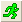

- 標準ツールバーの自動更新/再計算を一時停止ボタンをクリックすると、セッション内のすべての再計算を一時停止します。ホットキーCtrl + 0を使って自動再計算を一時停止できます。
- システム変数@AU = 0の値を設定してもセッションでの再計算を一時停止できます。再計算を停止すると、ステータスバーにAU:OFFと表示されます。
- 関連する錠前アイコンをクリックし、ポップアップメニューから再計算をブロックを選択すると、個々の操作の再計算をブロックできます。
全ての分析ツール及び、その他のほとんどのデータ処理ダイアログボックスには、再計算コントロールがあります。通常は、入力データを指定するダイアログボックスの上部付近にあります。
この特有な制御により、ソフトウェアが入力データへの変更をどのように処理するかを決定します。なし、自動、手動の3つのモードの何れかを選択します（下の表を参照）。それぞれ、なし=再計算なし、自動=自動で再計算、手動=手動で再計算します。
| なし |
再計算がなしにセットされている場合、出力は入力データから切り離されます。入力データが変更されても、元の出力結果を更新しません。さらに、パラメータの変更ショートカットメニューコマンド(下記)を使って、分析パラメータを調整するダイアログボックスを再度開けません。 (値の設定ダイアログボックスは例外です。) |
|---|---|
| 自動 |
再計算が自動にセットされている場合、入力データが変わると、結果が自動的に更新されます。 |
| 手動 (デフォルト) |
再計算が手動にセットされている場合、入力データが変わったら、手動で更新することができます。 |
Originプロジェクトに再計算操作が存在すると、ユーザーはいくつか視覚的な手がかりを得ることができます。
次の表では、さまざまな再計算ボタンとアイコンをまとめて、それらの意味を説明しています。
| ボタン/アイコン | 説明 |
|---|---|
|  | 標準ツールバーにあります。緑色のボタンは、プロジェクトで保留中の再計算操作がないことを示します。 |
| 標準ツールバーにあります。黄色のボタンは、プロジェクトで保留中の再計算操作があることを示します。 | |
| 標準ツールバーにあります。グレーアウト表示のボタンは、再計算操作がプロジェクトに存在しないか、セッションでブロックされていることを示します（上記を参照してください）。 | |
| 標準、自動更新ツールバーにあります。クリックすると、再計算ボタン（緑または黄色）が淡色表示になり、ボタンをもう一度クリックするまで操作を一時停止します。 | |
| 関連する操作は再計算=自動に設定されています。保留中の操作はありません。メイン操作の錠前アイコンは、最も左の列に表示されます | |
| 関連する操作は再計算=手動に設定されています。保留中の操作はありません。最初は、すべての手動再計算が緑色で表示されます。メイン操作の右側にある最新の関連する操作の列には、「+」アイコンが表示されます。関連する錠前アイコンにカーソルを合わせると、錠前アイコンを示すツールチップがポップアップ表示されます。 | |
| 関連する操作は再計算=手動に設定されています。最新の手動操作への入力を変更すると、アイコンが緑色から黄色に変わります。メイン操作の右側にある関連する保留中の操作の列には、「+」アイコンが表示されます。 | |
| 錠前アイコンが灰色のとき、この操作はOriginProのみで有効であり、現在のウィンドウまたはプロジェクトは通常版Originで開かれていることを示しています。この操作は通常版Originではサポートされていませんので、解析の再計算を行う場合はOriginProライセンスのあるコンピュータをご利用ください。 | |
| 赤い錠前アイコンは、何かが発生したことを示し、それ以上の再計算はできません。そのような状況はまれですが、たとえば、ユーザー定義のカーブフィット操作を含むプロジェクトファイルを同僚に渡したが、ユーザー定義のフィット関数を共有できなかった場合に発生します。 | |
| 更新済の再計算にブロックを配置すると、チェーン内の関連する各操作に緑色のブロックアイコンが表示されます。 | |
| 最新の再計算をブロックすると、チェーン内のすべての操作にこの緑色の「ブロック」アイコンが表示されます。 |
表示されていないツールバーボタンを表ｙ時したい場合は、ツールバーのカスタマイズダイアログを開いて、ボタンをワークスペースに追加できます。 |
グラフまたはレポートシートのカギのアイコンをクリックして、コンテキストメニューを開くことができます。メニューオプションについては次の表で説明しています。操作によってメニュー表示は異なります。
| 再計算 |
結果の列/シートを再計算し、結果を更新します。ロックが緑色（自動または手動）の場合、再計算オプションはグレー表示されます。 | ||
|---|---|---|---|
| パラメータの変更 |
設定を変更するためのダイアログボックスを開きます。 | ||
| 削除 |
この処理に関連した出力結果を全て削除します。削除のあと、結果を元に戻すことはできません。 | ||
| ソースに移動 |
この処理の入力データがあるワークシートに移動します。 もし複数のワークシートを有する操作の場合、Originは最初のシートに移動します。もし複数の錠前アイコンを有する操作の場合、Originは該当する操作(錠前)のシートへ移動します。 （重なった錠前アイコンを区別するには、錠前アイコンの位置をレイヤアイコン位置から開始地点や最終地点をにします。実際の操作は、データ：錠前アイコンの位置：開始地点/最終地点と選択します。） | ||
| グラフに行く |
入力プロットを含むソースグラフに移動します。Note：グラフウィンドウから操作を開始したときのみ、この項目が利用できます。 もし複数のグラフを有する操作の場合、Originは最初のグラフに移動します。もし複数の錠前アイコンを有する操作の場合、Originは該当する操作(錠前)のグラフへ移動します。 （重なった錠前アイコンを区別するには、錠前アイコンの位置をレイヤアイコン位置から開始地点や最終地点をにします。実際の操作は、データ：錠前アイコンの位置：開始地点/最終地点と選択します。） | ||
| 結果に行く |
この操作の結果シートに移動します。グラフウィンドウがアクティブなときに利用可能なメニューです。 この操作に複数の結果シートがある場合、Originは最初のシートに移動します。複数の鍵前アイコンがある操作の場合、Originは最初の結果シートに移動します。 | ||
| 解析マーカー |
グラフウィンドウ内の解析マーカーの表示を制御します。グラフウィンドウのコンテキストメニューのみ | ||
| 入力データをデータマーカとともにプロットする |
入力データを新しいグラフウィンドウにデータマーカと共にプロットします。ワークシートのコンテキストメニューのみ。 | ||
| 再計算モード: 手動/自動/しない |
選択したモードにチェックマークが付きます。別のオプションを選択してモードを変更します。 | ||
| 再計算のブロック |
この操作およびチェーン内の他のすべての操作の再計算を中断するには、再計算のブロックをクリックします。保留中の再計算にブロックを配置すると、チェーン内の関連する各操作に黄色のブロックアイコン | ||
| 非表示の行を無視する |
サブメニューから選択して非表示行（フィルタデータ）を作図や解析処理で無視するか含めるか選択します。自動の場合は、ワークシートプロパティダイアログのその他タブにある、作図と分析で非表示の行は無視するの設定に従います。 列値の設定、列のコピーツールにおいて、入力として行列であるnlbegin Xファンクションのセットはこのメニューをサポートしていないことに注意してください。 | ||
| 情報を表示 |
コメントと入出力情報をスクリプトウィンドウに書き出します。 | ||
| テーマに名前を付けて保存 |
関連する分析ダイアログの設定をテーマとして保存します。このテーマを使用して、新しいデータセットで同じ操作を繰り返すことができます。 | ||
| 操作をコピー |
線形多重回帰を除く2Dおよび3Dのフィッティングを実行する場合は、現在の曲線の分析操作を他のグラフにコピーします。解析の操作を貼り付けるには、目的のプロットを右クリック(グループ化プロット、レイヤ、グラフ全体等)し、操作を貼り付けをコンテキストメニューから選択します。操作の貼り付けは、異なるデータ種類の入力には対応していません。 詳細は、操作のコピー/貼り付けを確認してください。 このメニューは、行列データの再計算には使用できません。 | ||
| この操作を複製 |
再計算はデータの変更に役立ちます。操作のコピーは他のグラフに分析を適用する際に役立ちます。この操作を複製は、パラメータを変更した後の結果を比較するのに役立ちます。最初の操作を実行してから、錠前アイコンをクリックし、この操作を複製を選択します。これにより、(a) 新しい錠前アイコンがグラフに追加される、または、(b) ワークブックに新規で出力シートが追加されます。新しく追加された錠前アイコンをクリックしてパラメータを変更すると、複製された操作のみを更新できます。最初の操作での結果と比較可能です。 | ||
| 全てのグラフ/Y列に対してこれを繰り返す |
以下のデータに対して現在のプロット/Y列の分析を繰り返します。
一つのグラフに複数のプロットがある、または、ソースシートに複数のY列があるとき、そのうち1つに分析を行ったあとにこのコンテキストメニューを使って他のプロットにも同じ分析を適用できます。詳細は、他のデータセットやプロットを繰り返し分析を参照してください。 このメニューは、行列データの再計算には使用できません。
|
場合によっては、後処理のためにロック操作を削除する必要があります。
Notes：
|